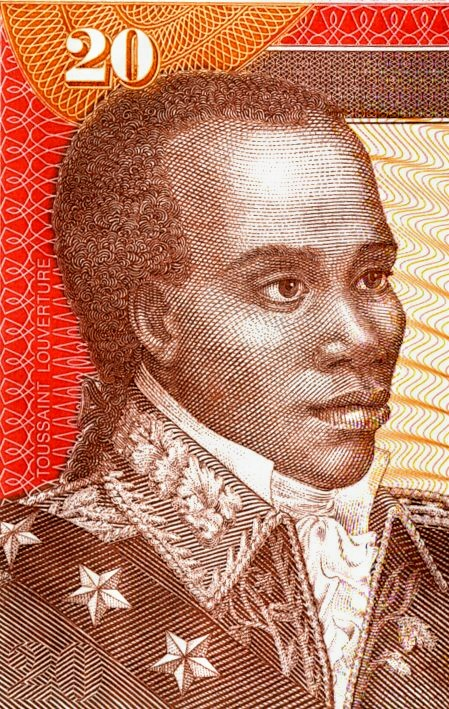
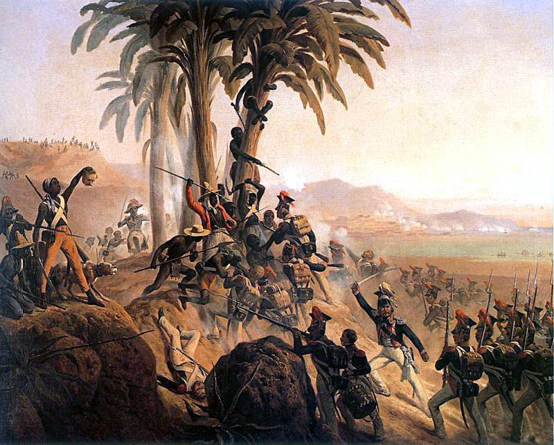
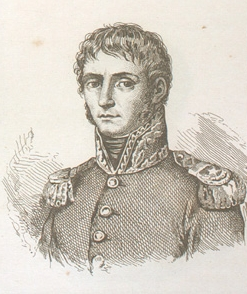
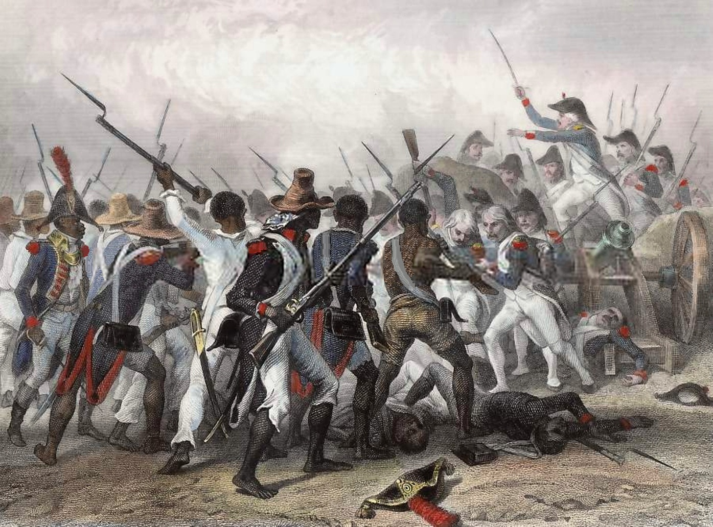
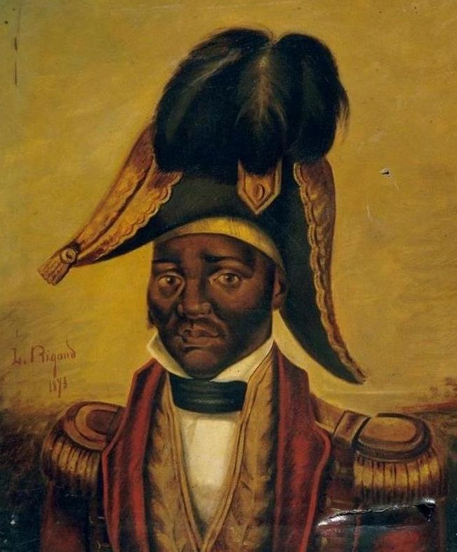

Friday · History
The (1791–1804): enslaved revolt, French collapse, and the hemisphere's second republic
In August 1791 enslaved people in rose against planters, the French colonial order, and the . built an army; sent 's expedition in 1802; Toussaint died in France in 1803. On 1 January 1804 declared independent—the first Black republic and the only successful slave revolution that built a lasting state.

{kind=link}
The names both a slave uprising (August 1791 onward) and a thirteen-year process of war, constitutions, foreign interventions, and state-building that ended with 's independence on 1 January 1804. It is not a single battle, not a simple story of enslaved people defeating France in one campaign, and not a sealed narrative that ignores ongoing diplomatic isolation and economic extraction afterward. Casualty and population figures remain contested estimates—scholars often cite ranges around 200,000–350,000 deaths over the entire revolutionary period, with uncertainty reflecting incomplete records, wartime chaos, and later demographic reconstructions. The ceremony (August 1791) is treated by some historians as a founding symbolic moment and by others as a later consolidation of memory; this capsule notes its place in Haitian political culture without presenting it as undisputed fact. The (1685) and the condition of slavery in are named as the Before; France's recognition (1825, under indemnity) and the long aftermath of isolation are named as After. Earlier Capsules lessons (May Fourth, Partition of India) are cited only as examples of other crises where dates, sovereignty, and casualties remain arguments, not monuments.
Select any words, or tap a dotted term.
- 1685 Code Noir Louis XIV's regulated slavery in French colonies. The sixty articles covered legal status, baptism, marriage restrictions, punishment, and manumission—a framework that still governed planters in 1791.
- 1750s–80s Saint-Domingue boom (western , now ) became France's richest colony. Sugar and coffee plantations imported hundreds of thousands of enslaved Africans. The enslaved population by 1789 numbered roughly 500,000; () around 30,000; whites ( planters, overseers and artisans) around 40,000.
- 1789 French Revolution begins The fall of the Bastille and the Declaration of the reached by news and print. Planters, , and enslaved workers all heard the language of rights; the meanings they assigned differed violently.
- May 1791 Free people of color petition The French National Assembly granted limited rights to some born of free parents. Planters in resisted. 's earlier armed protest (1790) had been crushed and executed, a memory fresh in 1791.
- Aug 1791 Slave uprising begins On the night of 21–22 August (some accounts say 14 August), enslaved people in the North Province rose. , a ceremony tradition, is remembered as the symbolic start; historians debate its historicity. Plantations burned. White planters fled or were killed. The rebellion spread.
- 1792–93 British and Spanish interventions Britain and Spain, at war with Revolutionary France, invaded hoping to seize territory or restore planter order. Enslaved insurgents made alliances with Spain (the eastern side of was Spanish). emerged as a military leader in Spanish service before switching to France.
- Aug–Sep 1793 Sonthonax abolition decree French Civil Commissioner , pressed by military collapse and insurgent strength, proclaimed the abolition of slavery in the North Province (29 August). He extended it colony-wide in September. This was a unilateral wartime decree, not yet French metropolitan law.
- 4 Feb 1794 French Convention abolishes slavery The in Paris formally abolished slavery in all French colonies. Toussaint and other Black leaders shifted allegiance from Spain to France. The legal ground had moved; the war continued.
- 1794–97 Toussaint's rise , now fighting for France against British and Spanish forces, consolidated military and political power. By 1797 he was the dominant figure. was forced out; French civilian authority weakened.
- 1801 Toussaint's constitution Toussaint promulgated a constitution for on 7 July 1801, declaring himself Governor-for-Life and keeping nominal French sovereignty while abolishing slavery permanently. , now First Consul, viewed this as unacceptable autonomy.
- Feb 1802 Leclerc expedition arrives dispatched his brother-in-law with roughly 20,000 troops to restore French authority and, secretly, to reinstate plantation order. Early engagements went to France; key Black generals (Christophe, ) defected or submitted. Toussaint negotiated terms and retired to a plantation.
- Jun 1802 Toussaint arrested French officers seized Toussaint by deception on 7 June 1802, claiming a meeting. He was shipped to France, imprisoned at in the Jura Mountains, and died there on 7 April 1803. His arrest reignited the resistance.
- 1802–03 Yellow fever / war resumes The French expedition suffered catastrophic losses to . Meanwhile news that had restored slavery in Guadeloupe (May 1802) reached . , Christophe, and rejoined the rebellion. The war became a fight for independence, not reform within France.
- 18 Nov 1803 Battle of Vertières At , near , the insurgent army defeated French forces under ('s successor, who had died of fever). The French withdrew from Cap and then from the colony.
- 1 Jan 1804 Declaration of Independence proclaimed the independence of at , restoring the indigenous Taíno name . The declaration broke with France and declared a Black republic. became governor-general, then emperor (1804–06).
- 1804–06 Dessalines's rule / massacres ordered the killing of remaining French settlers in 1804 to consolidate independence—massacres that are remembered as both state terror and the violent sealing of a revolutionary break. He was assassinated in 1806; the country then split between 's northern kingdom and 's southern republic.
- 1820–25 Reunification / French indemnity reunified briefly under (1820). In 1825 France recognized under the threat of naval force—but only in exchange for an indemnity of 150 million francs, later reduced. borrowed to pay; the debt burden lasted into the twentieth century.
Before
A sugar island, the Code Noir, and half a million people held as property when the French Revolution arrived by print
in 1789 was not a sleepy colony waiting for Europe to give it rights. It was the richest single colony in the eighteenth-century Caribbean—a machine that turned enslaved African labor, brutal discipline, and Caribbean land into sugar and coffee that enriched French ports and planters. Roughly 500,000 enslaved people worked plantations whose output was measured in exports to Bordeaux and Nantes. , the , numbered around 30,000; some owned property and even enslaved people themselves, but colonial law denied them political equality with whites. The white population— planters and overseers, artisans, and small holders—numbered around 40,000. The , promulgated by Louis XIV in 1685, had sixty articles regulating the legal non-personhood of enslaved people, from baptism requirements to the punishments that could be inflicted. The articles were enforced unevenly, but they framed the plantation order that still stood in 1791.
When news of the fall of the Bastille and the Declaration of the reached the colony in 1789, every class read the language of equality through its own interests. saw an opening to loosen metropolitan mercantile control. seized on 'all men' to demand political rights, sending delegations to Paris. Enslaved people heard the same words and drew different conclusions. , a free man of color, returned from France in 1790 with arms and called for rights; his revolt was crushed and he was executed on the wheel in February 1791. That violence was a preview. The May 1791 National Assembly decree granting limited rights to some born of free parents was resented by white planters and disappointed many . The colony in mid-1791 was legally a part of Revolutionary France, socially a slave society, and practically a powder magazine.
Resistance had not waited for revolutionary news from Paris. —escaped enslaved people—had lived in the interior mountains for decades. 's 1750s conspiracy and poison campaign, crushed when he was burned at the stake in 1758, was still a usable memory. religious practice, blending West African spiritual traditions and Catholic elements, provided networks and rituals outside planter surveillance. The idea that enslaved people were passive until Europe declared rights is a fiction. What 1789 offered was a destabilizing vocabulary and the visible weakness of metropolitan authority—invitations for organized revolt on a new scale.
The era
A night in August 1791, thirteen years of war, and the flag that went up on 1 January 1804
On the night of 21–22 August 1791 (some sources say 14 August, reflecting later reconstructions), enslaved people in the North Province rose in coordinated revolt. The ceremony—a gathering traditionally led by and involving —is remembered as the symbolic founding moment. Historians debate whether the ceremony happened as oral tradition and later state memory describe, or whether it was consolidated afterward as a unifying origin story. What is not disputed is that plantations burned, white planters were killed or fled, and the uprising spread across the northern plain with speed that terrified colonial authorities. was killed in battle in November 1791 and his head displayed; the revolt did not stop.

{kind=link}
The revolt became a multi-sided war. Britain and Spain, already at war with Revolutionary France, invaded in 1793 hoping to seize territory or restore planter order. , a former coachman who had learned to read and had some military experience, emerged as a leader fighting for Spain (, the eastern part of , was Spanish). Meanwhile the French Civil Commissioners, sent to restore order, faced military collapse. , pressed by insurgent strength and British invasion, issued a decree abolishing slavery in the North Province on 29 August 1793 and extended it colony-wide in September. This was a desperate wartime measure, not yet French law. On 4 February 1794 the in Paris formally abolished slavery in all French territories. Toussaint and other Black generals switched from Spanish to French service. The legal ground had shifted; the plantation system was formally ended; the question was now who would govern and under what terms.
Toussaint consolidated power through the mid-1790s, defeating British expeditionary forces (Britain withdrew in 1798 after losing thousands to disease and battle) and Spanish incursions. He also fought internal rivals, notably in the (1799–1800), a brutal conflict between Toussaint's largely Black army and 's mixed-race southern forces. By 1801 Toussaint was the unchallenged leader. He invaded and took control of the entire island. On 7 July 1801 he promulgated a constitution for , naming himself Governor-for-Life, abolishing slavery in perpetuity, and maintaining nominal allegiance to France while asserting near-total autonomy. , now First Consul, had not been consulted. He viewed Toussaint's constitution as unacceptable rebellion.

{kind=link}
In February 1802 sent an expedition commanded by his brother-in-law —roughly 20,000 troops in the initial wave, with more to follow. 's secret instructions were to restore French authority and prepare to reinstate plantation slavery, though the public rhetoric emphasized order and republicanism. Early French successes and negotiation split the revolutionary leadership. Key generals including and submitted to France; Toussaint negotiated terms and retired to a plantation near . On 7 June 1802 French officers lured Toussaint to a meeting and arrested him by deception. He was shipped to France, imprisoned in the cold Jura mountain fortress of , and died there on 7 April 1803 from neglect, cold, and malnutrition. His arrest reignited the war.
destroyed the French expedition faster than any army could. himself died of the disease in November 1802. His successor, Donatien de , resorted to mass executions, attack dogs, and terror, which hardened resistance. News that had restored slavery in Guadeloupe in May 1802 reached and confirmed what many already suspected: the expedition was not about rights but reconquest. , Christophe, and rejoined the insurgent side. The war was now unambiguously a fight for independence, not reform within the . On 18 November 1803, at near , the revolutionary army defeated . The French evacuated Cap and then withdrew from the colony entirely. On 1 January 1804, at , proclaimed the independence of , restoring the indigenous Taíno name for the land. The hemisphere's second independent republic and the world's first Black republic was born—not from a negotiated treaty, but from the military defeat of a European colonial power by formerly enslaved people.

{kind=link}
How it showed up
A coachman who learned to read, a general who did not forgive, and the emperor who underestimated a disease
The was not a single leader's project. It involved hundreds of thousands of enslaved people who made the decision to risk death for freedom, priests and priestesses who organized networks, maroon leaders who had resisted for years, who fought for equality and then for independence, and military commanders who learned tactics by experience. is the most famous name because he built the army and the 1801 constitutional framework, but he died in France before independence. declared independence and ruled the new state. and shaped the post-independence order. sent tens of thousands to their deaths underestimating both the resolve of the insurgents and the power of .
Toussaint Louverture
c. 1743–1803
Born into slavery, possibly in the 1740s, Toussaint learned to read and worked as a coachman. He joined the 1791 uprising, rose to command under Spanish and then French service, defeated British and internal rivals, and by 1801 controlled all of . His 1801 constitution asserted near-autonomy while keeping nominal French sovereignty. Arrested by French officers in June 1802, he was imprisoned at and died there on 7 April 1803. His military and political architecture outlasted him; his death became a rallying symbol.
, engraving by Nicolas Eustache Maurin. The general who built the revolutionary state, wrote a constitution, and died in a French prison a year before the independence he fought for.Wikimedia Commons / public domain

Jean-Jacques Dessalines
c. 1758–1806
Born enslaved, fought under Toussaint, briefly submitted to in 1802, then rejoined the rebellion when French intentions became clear. He commanded at in November 1803 and proclaimed independence at on 1 January 1804. As governor-general and then Emperor , he ordered the of remaining French settlers to consolidate the break with France. He was assassinated in an ambush in October 1806, and the country split between Christophe's north and 's south.
, period portrait. The general who declared independence on 1 January 1804 and ruled until his assassination in 1806.Wikimedia Commons / public domain
{kind=link}

Henri Christophe
1767–1820
Born in Grenada, Christophe fought in the revolution, initially submitted to the French in 1802, then returned to the insurgent side. After 's death he ruled the northern Kingdom of (1806–1820) as King Henri I, building the massive fortress to defend against expected French invasion. He shot himself in 1820 during a rebellion.
, by Jacques-Louis David, 1812. The French emperor who sent the 1802 expedition to reconquer and whose imperial ambitions were checked by and insurgent resistance.Wikimedia Commons / public domain
{kind=link}
Napoleon Bonaparte
1769–1821
As First Consul, saw Toussaint's 1801 constitution as unacceptable and dispatched with orders to restore French authority and prepare the ground for re-enslavement. The expedition's collapse to and insurgent resistance was one of the great military failures of his career. By 1804 he had lost the colony and abandoned plans for a North American empire, selling Louisiana to the United States in 1803.
in his study at the Tuileries, 1812, by Jacques-Louis David. First Consul and then Emperor, he restored slavery in Guadeloupe and sent the expedition to reconquer ; both policies failed, and 's independence marked a major colonial defeat.Wikimedia Commons / public domain
Same time elsewhere
Napoleonic Europe, the Louisiana Purchase, and Spanish America watching the hemisphere's first successful slave revolution
The unfolded while Europe was remaking itself through revolutionary and Napoleonic wars. The 's 1794 abolition of slavery was reversed when restored it in Guadeloupe in 1802; the 's universalist language had always been contested in the colonies. In 1803 sold Louisiana to the United States for fifteen million dollars, a transaction made possible in part because the catastrophic failure of the expedition had already killed his ambitions for a western empire. Thomas Jefferson, who bought the territory, was a slaveholder who viewed the with alarm as a dangerous example for enslaved people in the United States.
The revolution terrified slaveholding societies across the Americas. In the United States, Gabriel's Rebellion (Virginia, 1800) and Denmark Vesey's planned uprising (South Carolina, 1822) were suppressed with references to as the specter. In Jamaica and Cuba, planters tightened controls and lobbied for military reinforcements. In Spanish America, took refuge in in 1815 after defeats; provided him with arms, ships, and money in exchange for a promise to abolish slavery—a promise Bolívar kept unevenly. The Haitian example inspired enslaved and across the hemisphere and provided material support to independence movements, even as newly independent Latin American republics often maintained diplomatic distance from the Black republic they feared to acknowledge.
Diplomatically, was isolated. The United States did not recognize until 1862, during the Civil War. France did not recognize it until 1825, and then only under the coercion of a naval threat and in exchange for the notorious indemnity of 150 million francs (later reduced to 90 million) to compensate former slaveholders. Britain, which had lost thousands of troops trying to conquer in the 1790s, granted de facto trade relations but delayed formal recognition. The revolution that destroyed Atlantic slavery's richest colony was never forgiven by the powers that had profited from it.
After
A divided state, an indemnity that lasted a century, and the long costs of being the first
ruled as governor-general and then, from October 1804, as Emperor . In 1804 he ordered the massacre of the remaining French settlers to seal the rupture with the colonial past—killings that were both state terror and the violent consolidation of independence. He was assassinated in October 1806. The country then split between 's northern kingdom (1806–1820) and 's southern republic (1806–1818). Christophe built the , a massive mountaintop fortress, in anticipation of a French invasion that never came. reunified the country in 1820 and ruled until 1843, but the split revealed persistent tensions between Black former slaves and mixed-race elites, between militarized labor systems and land redistribution, and between defensive authoritarianism and republican ideals.
In 1825 France sent warships and threatened to re-invade unless paid an indemnity of 150 million francs to compensate former slaveholders for lost 'property.' agreed under duress. The amount was reduced to 90 million francs in 1838, but had to borrow from French banks at high interest to make payments. The debt and its interest burden drained the Haitian treasury for more than a century—'s last payment was in 1947, though some scholars argue the effective burden lasted longer. The indemnity is now widely recognized as extortion; France has not repaid it. The —borrowing to pay the people who had enslaved you—crippled 's development and stands as one of the starkest examples of how colonial powers extracted wealth even after formal independence.
The memory politics of the remain contested. commemorates 1 January 1804 as independence day and remembers Toussaint, , and Christophe as founding heroes. The ceremony, whether historical event or later consolidation, is a central symbol of revolutionary consciousness. Foreign observers in the nineteenth and twentieth centuries often portrayed the revolution as chaos or barbarism, narratives that justified continued intervention (the United States occupied 1915–1934). Modern scholarship, beginning with 's The Black Jacobins (1938) and continuing through and others, has recovered the as a foundational event in Atlantic history, anti-slavery struggle, and the Black radical tradition. The revolution that planters tried to bury became, in the long run, the proof that enslaved people could defeat empires and build states—even if the hemisphere's powers punished them for it.
A question
A question to keep asking
If the French had not abolished slavery in February 1794, or if had not sent the expedition in 1802, do you think the insurgents would still have built an independent by 1804—or would the revolution have taken a different path, perhaps remaining within a reformed ?
Fun fact
Yellow fever fought for the revolution
The French expedition of 1802 brought roughly 20,000–40,000 troops to reconquer . Within a year, had killed himself and perhaps half or more of his army. Mosquitoes, not only revolutionary tactics, dismantled 's plan. The disease killed European soldiers far more readily than people with childhood exposure in the Caribbean; the differential mortality curve is one reason the insurgent forces regained ground after Toussaint's arrest.